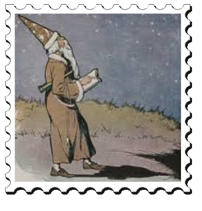

A man who lived a long time ago believed that he could read the future in the stars. He called himself an Astrologer, and spent his time at night gazing at the sky.


One evening he was walking along the open road outside the village. His eyes were fixed on the stars.
He thought he saw there that the end of the world was at hand, when all at once, down he went into a hole full of mud and water.

There he stood up to his ears, in the muddy water,
and madly clawing at the slippery sides of the hole
in his effort to climb out.
and madly clawing at the slippery sides of the hole
in his effort to climb out.
His cries for help soon brought the villagers running. As they pulled him out of the mud, one of them said:
"You pretend to read the future in the stars, and yet you fail to see what is at your feet! This may teach you to pay more attention to what is right in front of you, and let the future take care of itself."

"What use is it," said another, "to read the stars, when you can't see what's right here on the earth?"